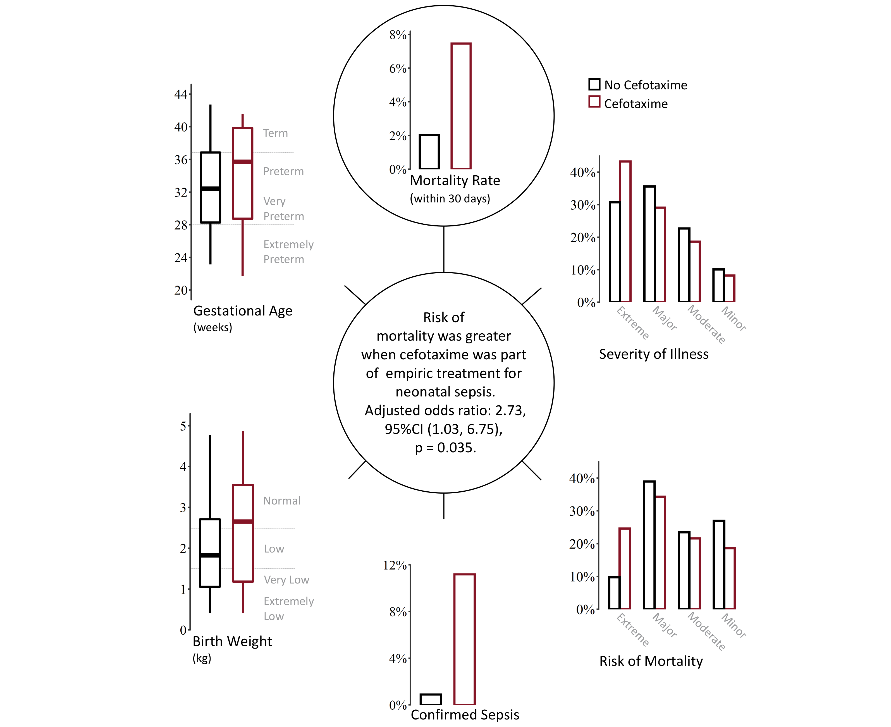
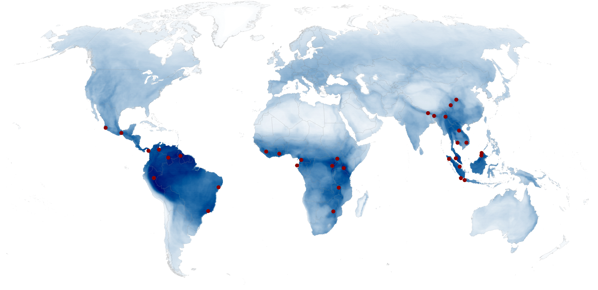
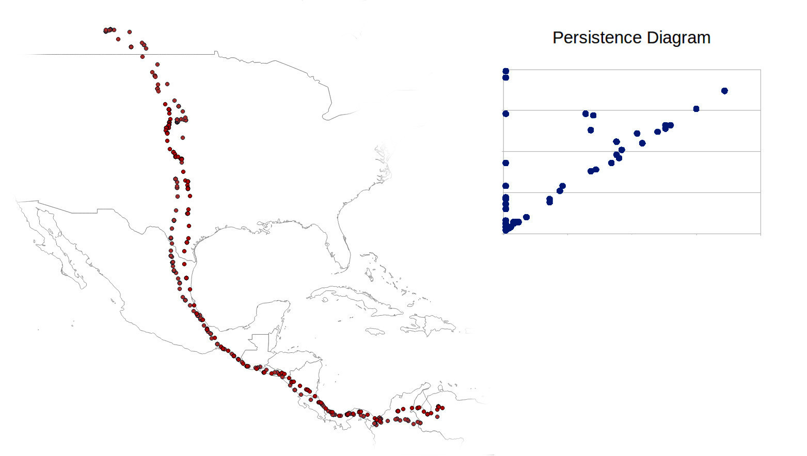

My Projects
Neonatal Sepsis
October, 2019
An analysis of neonatal sepsis within the University of Utah Hospital system. Exploring the correlation of cefotaxime administration with increased mortality. link
sboost
October, 2018

Here I describe sboost which is an R package I developed as an implementation of AdaBoost with decision stumps. Also, a description of a machine learning project to analyze data on Android app system calls in a Kaggle competition setting. link
Detecting Peaks in Biodiversity
April, 2017
Answering the question "Where are areas of high biodiversity?" by extending the application of a density based clustering algorithm. link
Proposed Trajectory Comparison Method
April, 2017
This is a proposal for a new method of trajectory comparison using topological data analysis. The method involves using a modified version of persistent homology. link
IUCN Red List by Country
December, 2016

This is a project using HTML, CSS, JavaScript, and D3 to display data in an interactive visualization. The data displayed is summary statistics by country for animals, retrieved from the IUCN Red List of Threatened Species. link